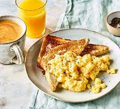

Scrambled eggs
Eggs are one of my favourite foods. Here is a recipe for deliciously rich scrambled eggs.

Ingredients
- 2 eggs
- 1tbs butter
- 2tbs cream
Method
- Melt butter in a frying pan over a medium heat
- Gently mix the eggs and cream in a bow
- Once butter hs mel ted add cream and eggs of the pan to the center every 20 seconds (as if you are making an omelette)